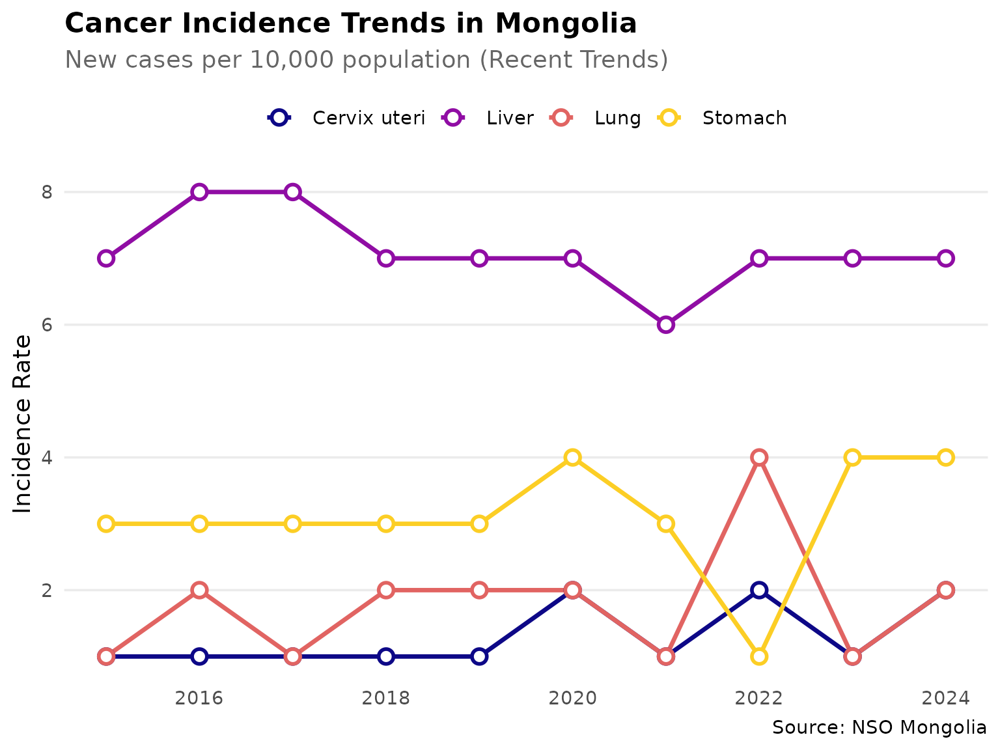
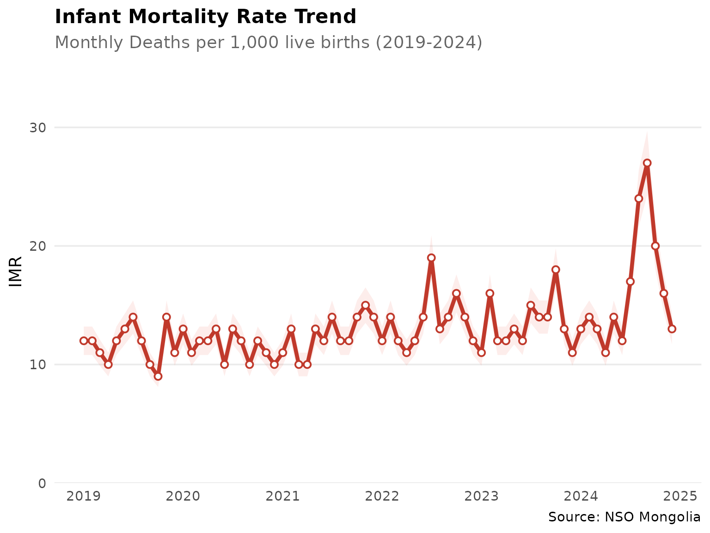
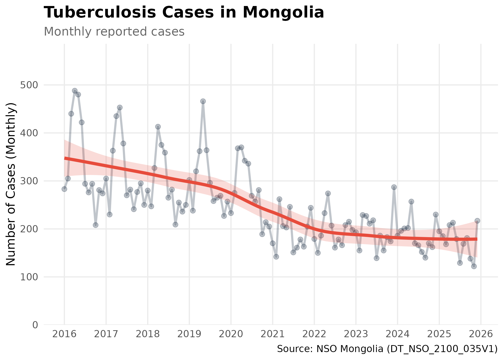

library(mongolstats)
library(dplyr)
library(ggplot2)
nso_options(mongolstats.lang = "en")
# Global theme with proper margins to prevent text cutoff
theme_set(
theme_minimal(base_size = 11) +
theme(
plot.margin = margin(10, 10, 10, 10),
plot.title = element_text(size = 13, face = "bold"),
plot.subtitle = element_text(size = 10, color = "grey40"),
legend.text = element_text(size = 9),
legend.title = element_text(size = 10)
)
)Overview
Mongolia’s National Statistics Office maintains comprehensive public health surveillance data. This guide demonstrates how to discover and access epidemiological data for research and policy analysis.
Finding Health Tables
Search by Keyword
Finding the right data is the first step in any analysis. The
nso_itms_search() function allows you to query the entire
NSO catalog using simple keywords:
# Infant and maternal health
mortality <- nso_itms_search("mortality")
mortality |>
select(tbl_id, tbl_eng_nm) |>
head(10)
#> # A tibble: 10 × 2
#> tbl_id tbl_eng_nm
#> <chr> <chr>
#> 1 DT_NSO_2100_014V1 NUMBER OF INFANT MORTALITY, aimags and the Capital and by …
#> 2 DT_NSO_2100_014V2 INFANT MORTALITY RATE, per 1000 live births, aimags and th…
#> 3 DT_NSO_2100_014V4 INFANT MORTALITY, by sex, by soum, and by year
#> 4 DT_NSO_2100_014V5 INFANT MORTALITY RATE, per 1000 live births, by sex, by s…
#> 5 DT_NSO_2100_015V1 INFANT MORTALITY RATE, per 1000 live births, aimags and th…
#> 6 DT_NSO_2100_015V2 INFANT MORTALITY, per 1000 live births, by soum, and by ye…
#> 7 DT_NSO_2100_023V1 MATERNAL MORTALITY RATIO, per 1,000 live births, by soum,…
#> 8 DT_NSO_2100_030V2 UNDER-FIVE MORTALITY, per 1000 live births, aimags and the…
#> 9 DT_NSO_2100_040V1 NEONATAL MORTALITY, aimags and the Capital and by month
#> 10 DT_NSO_2100_040V2 NEONATAL MORTALITY RATE, per 1000 live births, aimags and …
# Cancer surveillance
cancer <- nso_itms_search("cancer")
cancer |> select(tbl_id, tbl_eng_nm)
#> # A tibble: 4 × 2
#> tbl_id tbl_eng_nm
#> <chr> <chr>
#> 1 DT_NSO_2100_012V1 NEW CASES OF CANCER, per 10000 population, by type of cancer
#> 2 DT_NSO_2100_013V1 DEATHS OF CANCER, per 10000 population, by year
#> 3 DT_NSO_2100_044V1 NEW CASES OF CANCER, by age group, by year
#> 4 DT_NSO_2100_045V1 NEW CASES AND MORTALITY OF CANCER, per 10000 population, ai…
# Communicable diseases
infectious <- nso_itms_search("tuberculosis")
infectious |> select(tbl_id, tbl_eng_nm)
#> # A tibble: 4 × 2
#> tbl_id tbl_eng_nm
#> <chr> <chr>
#> 1 DT_NSO_2800_025V1 PREVALENCE TUBERCULOSIS PER 100000 PERSON, by aimags and th…
#> 2 DT_NSO_2800_026V1 INCIDENCE OF TUBERCULOSIS PER 100000 PERSON, by aimags and …
#> 3 DT_NSO_2800_027V1 DEATH RATES ASSOCIATED WITH TUBERCULOSIS PER 100000 PERSON,…
#> 4 DT_NSO_2800_028V1 PROPORTION OF TUBERCULOSIS CASES DETECTED AND CURED UNDER D…Browse by Sector
Health and education statistics are grouped together:
# View all sectors
sectors <- nso_sectors()
sectors
#> # A tibble: 8 × 3
#> id type text
#> <chr> <chr> <chr>
#> 1 Economy, environment l Economy, environment
#> 2 Education, health l Education, health
#> 3 Historical data l Historical data
#> 4 Industry, service l Industry, service
#> 5 Labour, business l Labour, business
#> 6 Population, household l Population, household
#> 7 Regional development l Regional development
#> 8 Society, development l Society, development
# Find health-related subsectors
health_sector <- sectors |> filter(grepl("health", text, ignore.case = TRUE))
if (nrow(health_sector) > 0) {
subsectors <- nso_subsectors(health_sector$id[1])
subsectors |> head()
}
#> # A tibble: 6 × 3
#> id type text
#> <chr> <chr> <chr>
#> 1 Births, deaths l Births, deaths
#> 2 Disease l Disease
#> 3 General educational schools l General educational schools
#> 4 General indicators for Education l General indicators for Education
#> 5 Health insurance l Health insurance
#> 6 Main indicators for Health sector l Main indicators for Health sectorCase Study: Cancer Epidemiology
Exploring Cancer Incidence Data
Cancer burden is shifting in Mongolia. To understand these changes, we can analyze incidence trends over the last decade:
# Find cancer incidence table
cancer_tbl <- "DT_NSO_2100_012V1" # New cases per 10,000 population
# Examine available dimensions
meta <- nso_table_meta(cancer_tbl)
meta
#> # A tibble: 2 × 5
#> dim code is_time n_values codes
#> <chr> <chr> <lgl> <int> <list>
#> 1 Type malignant neoplasms Хорт хавдрын төрөл FALSE 7 <tibble [7 × 3]>
#> 2 Annual Он FALSE 25 <tibble [25 × 3]>
# View cancer types
cancer_types <- nso_dim_values(cancer_tbl, "Type malignant neoplasms", labels = "en")
cancer_types |> head(10)
#> # A tibble: 7 × 2
#> code label_en
#> <chr> <chr>
#> 1 0 "Total"
#> 2 1 " Liver"
#> 3 2 " Cervix uteri"
#> 4 3 " Stomach"
#> 5 4 " Lung"
#> 6 5 " Oesophagus"
#> 7 6 " Other"
# Check time coverage
# Note: "Annual" dimension uses internal codes, so we map labels (years) to codes
annual_meta <- nso_dim_values(cancer_tbl, "Annual", labels = "both")
years <- annual_meta$label_en
years
#> [1] "2024" "2023" "2022" "2021" "2020" "2019" "2018" "2017" "2016" "2015"
#> [11] "2014" "2013" "2012" "2011" "2010" "2009" "2008" "2007" "2006" "2005"
#> [21] "2004" "2003" "2002" "2001" "2000"Fetching and Visualizing Cancer Trends
# Fetch cancer incidence data for the most common types
# We focus on the last 10 years to show recent trends
# and select 4 major cancer types (Lung, Liver, Stomach, Cervix)
# Step 1: Identify the 10 most recent years
recent_years <- annual_meta |>
arrange(label_en) |>
tail(10) |>
pull(code)
# Step 2: Fetch data for major cancer types
cancer_data <- nso_data(
tbl_id = cancer_tbl,
selections = list(
"Type malignant neoplasms" = c("1", "2", "3", "4"), # Lung, Liver, Stomach, Cervix
"Annual" = recent_years
),
labels = "en"
)
# Visualize cancer incidence trends as static plot
p <- cancer_data |>
ggplot(aes(
x = as.integer(Annual_en), y = value, color = `Type malignant neoplasms_en`,
group = `Type malignant neoplasms_en`
)) +
geom_line(linewidth = 1.2) +
geom_point(size = 3, shape = 21, fill = "white", stroke = 1.5) + # hollow points stand out on lines
scale_color_viridis_d(option = "plasma", end = 0.9) + # colorblind-friendly discrete palette
scale_x_continuous(breaks = function(x) seq(ceiling(min(x)), floor(max(x)), by = 1)) +
labs(
title = "Cancer Incidence Trends in Mongolia",
subtitle = "New cases per 10,000 population (Recent Trends)",
x = NULL,
y = "Incidence Rate (per 10,000)",
color = "Cancer Type",
caption = "Source: NSO Mongolia"
) +
theme_minimal(base_size = 12) +
theme(
legend.position = "top",
plot.title = element_text(face = "bold", size = 16),
plot.subtitle = element_text(color = "grey40", margin = margin(b = 10)),
panel.grid.minor = element_blank(),
panel.grid.major.x = element_blank(), # vertical gridlines clutter multi-line plots
axis.text = element_text(color = "grey30")
)
p # print static ggplot
Regional Disparities
# Infant mortality by aimag
imr_tbl <- "DT_NSO_2100_015V1" # IMR per 1,000 live births (Monthly)
# Get metadata
imr_meta <- nso_table_meta(imr_tbl)
months <- nso_dim_values(imr_tbl, "Month", labels = "en")
# Fetch recent data for all regions (2024 Average)
months_2024 <- months |>
filter(grepl("2024", label_en)) |>
pull(code)
imr_data <- nso_data(
tbl_id = imr_tbl,
selections = list(
"Region" = nso_dim_values(imr_tbl, "Region")$code,
"Month" = months_2024
),
labels = "en"
) |>
filter(nchar(Region) == 3) |> # Keep only Aimags and Ulaanbaatar
mutate(
Region_en = trimws(Region_en),
Region_en = dplyr::case_match(
Region_en,
"Bayan-Ulgii" ~ "Bayan-Ölgii",
"Uvurkhangai" ~ "Övörkhangai",
"Khuvsgul" ~ "Hovsgel",
"Umnugovi" ~ "Ömnögovi",
"Tuv" ~ "Töv",
"Sukhbaatar" ~ "Sükhbaatar",
.default = Region_en
)
) |>
group_by(Region_en) |>
summarise(value = mean(value, na.rm = TRUE), .groups = "drop")
# Find regions with highest IMR
imr_data |>
arrange(desc(value)) |>
select(Region_en, value) |>
head(10)
#> # A tibble: 10 × 2
#> Region_en value
#> <chr> <dbl>
#> 1 Hovsgel 27.2
#> 2 Arkhangai 24.8
#> 3 Övörkhangai 23.9
#> 4 Bayankhongor 21.6
#> 5 Ömnögovi 19.9
#> 6 Uvs 19.8
#> 7 Sükhbaatar 17.9
#> 8 Bayan-Ölgii 17.7
#> 9 Zavkhan 17.5
#> 10 Khovd 16.8Time Trend Analysis
# Analyze national trend (Monthly)
imr_national <- nso_data(
tbl_id = imr_tbl,
selections = list(
"Region" = "0", # National total
"Month" = months$code
),
labels = "en"
)
# Analyze national infant mortality trend using monthly data
# Convert Month_en column (format: "YYYY-MM") to proper dates
# Filter to 2019-2024 period for clear recent trends
imr_national |>
mutate(date = as.Date(paste0(Month_en, "-01"))) |>
filter(date >= as.Date("2019-01-01") & date <= as.Date("2024-12-31")) |>
ggplot(aes(x = date, y = value, group = 1)) +
geom_line(color = "#2980b9", linewidth = 1, alpha = 0.3) + # dim raw data so trend stands out
geom_point(color = "#2980b9", size = 2, shape = 21, fill = "white", stroke = 1, alpha = 0.5) +
geom_smooth(method = "loess", se = TRUE, color = "#2980b9", fill = "#2980b9", alpha = 0.2, linewidth = 1.5) + # LOESS smoother reveals underlying trend
scale_x_date(date_breaks = "1 year", date_labels = "%Y") +
scale_y_continuous(limits = c(0, NA), expand = expansion(mult = c(0, 0.2))) + # y-axis starts at 0 to avoid exaggerating changes
labs(
title = "Infant Mortality Rate Trend",
subtitle = "Monthly Deaths per 1,000 live births (2019-2024)",
x = NULL,
y = "IMR (per 1,000 live births)",
caption = "Source: NSO Mongolia"
) +
theme_minimal(base_size = 12) +
theme(
plot.title = element_text(face = "bold", size = 16),
plot.subtitle = element_text(color = "grey40"),
panel.grid.minor = element_blank(),
panel.grid.major.x = element_blank()
)
Case Study: Tuberculosis Burden
Let’s analyze the seasonal trends of Tuberculosis using monthly data.
# TB cases (Monthly)
tb_tbl <- "DT_NSO_2100_035V1" # CASES OF COMMUNICABLE DISEASES, by type of selected diseases and by month
# Get metadata to find the code for Tuberculosis
# Note: Dimensions are "Indicators" and "Month"
indicators <- nso_dim_values(tb_tbl, "Indicators", labels = "en")
tb_code <- indicators |>
filter(grepl("Tuberculosis", label_en, ignore.case = TRUE)) |>
pull(code)
# Fetch monthly data
tb_data <- nso_data(
tbl_id = tb_tbl,
selections = list(
"Indicators" = tb_code,
"Month" = nso_dim_values(tb_tbl, "Month")$code
),
labels = "en"
)
# Visualize Monthly Tuberculosis Trends
p <- tb_data |>
mutate(date = as.Date(paste0(Month_en, "-01"))) |>
filter(!is.na(value)) |>
ggplot(aes(x = date, y = value, group = 1)) +
geom_line(color = "#2c3e50", linewidth = 1, alpha = 0.3) + # dim raw data
geom_point(color = "#2c3e50", size = 2, alpha = 0.3) +
geom_smooth(method = "loess", se = TRUE, color = "#e74c3c", fill = "#e74c3c", alpha = 0.2, linewidth = 1.5) + # trend line
scale_x_date(date_breaks = "1 year", date_labels = "%Y") +
scale_y_continuous(limits = c(0, NA), expand = expansion(mult = c(0, 0.2))) + # start y-axis at 0
labs(
title = "Tuberculosis Cases in Mongolia",
subtitle = "Monthly reported cases",
x = NULL,
y = "Number of Cases (Monthly)",
caption = "Source: NSO Mongolia (DT_NSO_2100_035V1)"
) +
theme_minimal(base_size = 12) +
theme(
plot.title = element_text(face = "bold", size = 16),
plot.subtitle = element_text(color = "grey40"),
panel.grid.minor = element_blank()
)
p # print static ggplot
Biostatistical Note: This plot shows the number of reported cases, not the incidence rate. Trends should be interpreted with caution, as an increase in cases could be due to population growth or improved detection, rather than an increase in disease risk.
Tips for Epidemiological Research
-
Always check time coverage: Use
nso_table_periods()to verify data availability -
Use labels for clarity: Set
labels = "en"to get readable dimension names - Join multiple indicators: Combine tables to calculate derived metrics (e.g., case-fatality rates)
- Account for denominator data: Link disease counts with population data for rate calculations
- Regional analysis: Most health tables include breakdowns by aimag and soum for geographic analysis
Next Steps
- Mapping Health Outcomes: See the Mapping Guide for spatial epidemiology
- Reference Documentation: Explore all available functions in the Reference